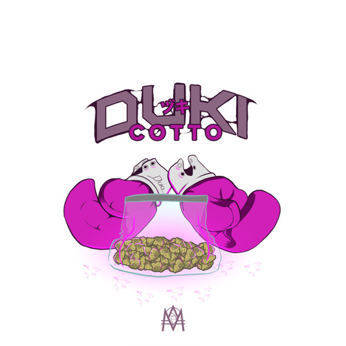
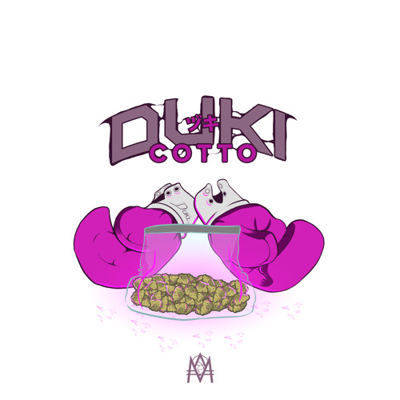
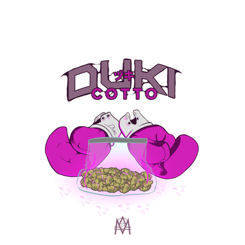

Entre 2016 y 2019, Duki se convirtió en el principal referente del trap en Latinoamérica gracias a una combinación explosiva
de carisma, talento lírico y visión artística. Su salto a la fama comenzó tras ganar una batalla clave en El Quinto Escalón,
lo que le permitió grabar “No Vendo Trap”, su primer gran éxito viral. A partir de ahí, Duki impuso un estilo agresivo, melódico
y cargado de referencias callejeras, con temas como “She Don’t Give a FO”, “Hello Cotto” y “Rockstar”, que se volvieron himnos
de la juventud urbana. En 2018, su figura se potenció aún más con la creación del trío Modo Diablo (junto a YSY A y Neo Pistea)
desde donde lanzó varios hits que consolidaron al trap argentino como un fenómeno cultural. Su capacidad para escribir hooks
pegajosos, fluir sobre beats oscuros y representar una generación sin filtros lo llevaron a colaborar con productores y artistas
internacionales, posicionándolo como la cara visible del trap en español en sus primeros años de expansión. Para 2019, Duki ya
era un ídolo regional con millones de reproducciones, influencia en toda América Latina y un lugar asegurado como el pionero
que sacó el trap del under y lo volvió mainstream.
Has click en las imagenes para escuchar las canciones:
